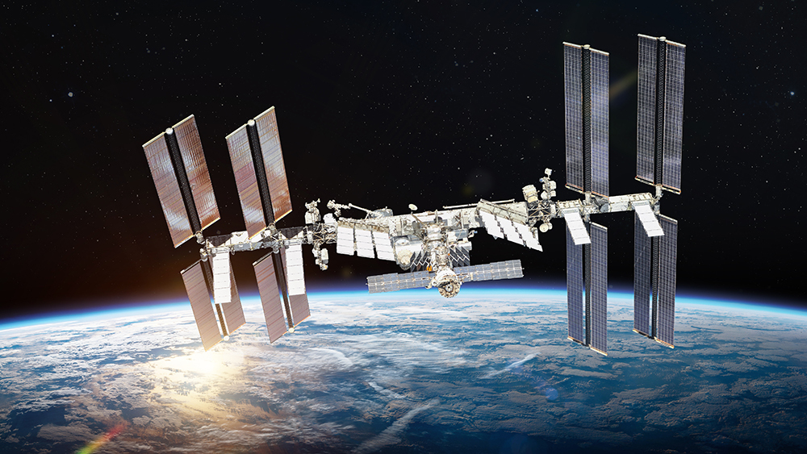
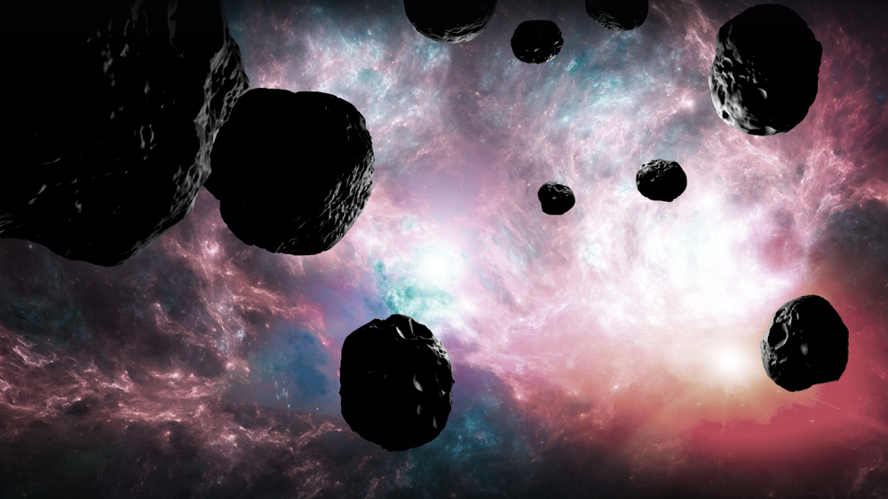
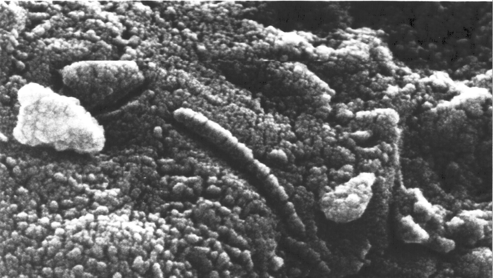
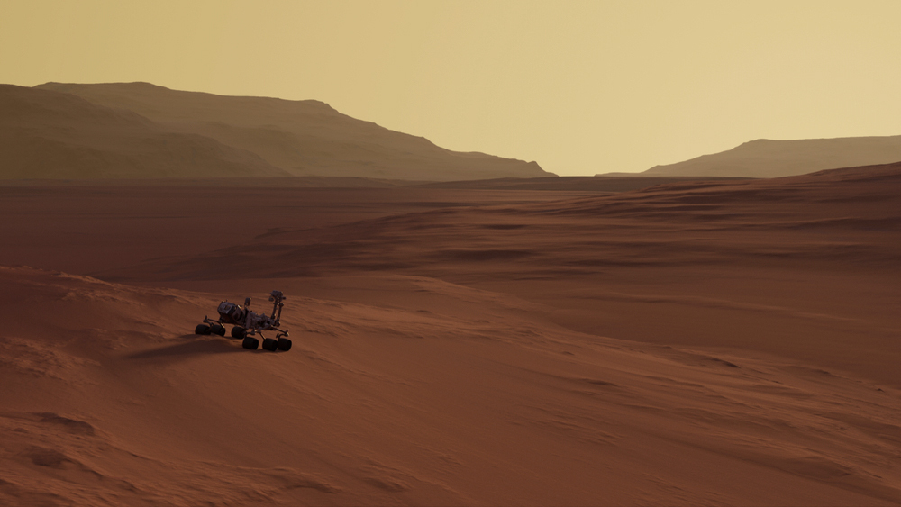
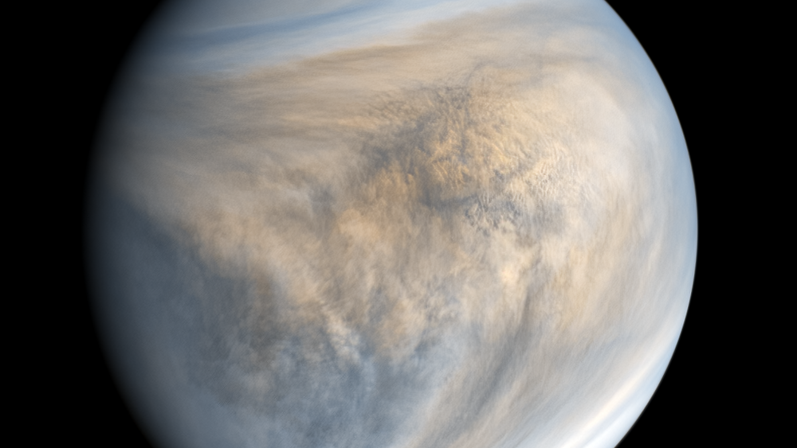
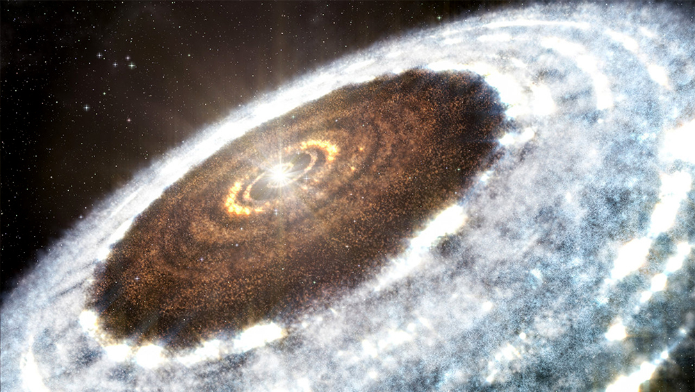
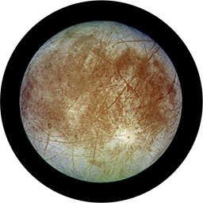
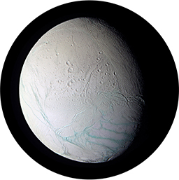
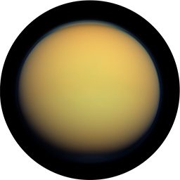

- Может ли жизнь вообще существовать где-то вне нашей планеты?
- Источник жизни — кометы
- Жизнь на Марсе и Венере
- Спутники планет Солнечной Системы: Европа, Энцелад и Титан
- Экзопланеты
Одна из главных концепций происхождения жизни на Земле — теория панспермии. Она предполагает, что живые организмы или необходимые вещества для их формирования были занесены из космоса.
Бактерии-экстремофилы способны выживать при очень низких или высоких температурах, в вулканах, гейзерах, на дне океана, в вечной мерзлоте и даже в базальтовых породах. Именно открытия в области микробиологии сподвигли ученых начать активный поиск признаков жизни на других объектах Солнечной системы.
Источник жизни — кометы
Высадка космического аппарата на комету Чурюмова-Герасименко показала, что некоторые участки ее поверхности богаты органическими веществами. Они теоретически могут быть кирпичиками жизни.
— Но это кирпичики самые-самые элементарные. Не исключено, что именно кометы доставили на Землю и воду, и аминокислоты для последующей биологической эволюции, — говорит Владимир Сурдин, астроном, доцент МГУ, старший научный сотрудник Государственного астрономического института имени П. К. Штернберга.
На кометах очень жесткие условия: температура ниже -70°С, вода присутствует лишь в виде льда и пара, улетучивающегося в космос. Прибавьте к этому высокий уровень космической радиации. Однако, поверхность изрезана пещерами.
— А это намек на то, что там есть, где спрятаться от радиации, где найти приемлемую температуру. В относительно теплых полостях комет теоретически могла бы существовать жизнь, — объясняет Владимир Сурдин.
Но способны ли микроорганизмы выжить при прохождении небесными телами атмосферы Земли? Чтобы ответить на этот вопрос, российские ученые провели эксперимент. Искусственные метеориты с различными микроорганизмами на борту запустили на орбиту Земли таким образом, чтобы они вращались в течение двух недель, а затем упали под действием гравитации. Они прошли через плотные слои атмосферы, где нагревались до 1000°С. Почти все микроорганизмы сгорели. Однако двум видам все-таки удалось выжить.
Жизнь на Марсе и Венере
Самый яркий пример — Марс. Однако на Красной планете работает уже пятый по счету американский марсоход Perseverance, проводит исследования китайский аппарат «Чжучжун». Никаких следов жизни. И надежда их найти постепенно угасает.
Как ни странно, пролить свет на возникновение жизни на Земле может помочь изучение Венеры. На этой планете адские условия: температура 470°С, давление 92 атмосферы, скорость ветра 725 км/ч, периодически идут дожди из металла. Однако 3 млрд лет назад этот враждебный мир скорее всего был очень похож на современную Землю.
— Венера получила при образовании такое же количество воды, как и Земля. Вначале, когда образовалась Венера, у Солнца была меньшая светимость. Именно Венера находилась в зоне обитаемости. На Земле же еще было холодно. Так что не исключено, что Венера была первой планетой, на которой образовалась жизнь, — говорит ведущий научный сотрудник Института космических исследований РАН Людмила Засова.
И, возможно, ученым удастся обнаружить следы этой жизни, но не на поверхности, а в плотном облачном слое Венеры. На высоте 50-60 км атмосферное давление аналогично земному, а температура колеблется от 0 до 20°С. В таких условиях примитивная жизнь вполне успешно развивается на нашей планете. И даже то, что венерианские облака представляют собой 75% раствор серной кислоты, для микроорганизмов не проблема.
В сентябре 2020-го года ученые обнаружили в атмосфере Венеры фосфин.Этот газ входит в число потенциальных биомаркеров — химических веществ, которые свидетельствуют о присутствии живых организмов. Но фосфин может образоваться и без участия жизни, а многие эксперты и вовсе подвергли сомнению сам факт его обнаружения на Венере.
Изучение этой раскаленной планеты также может стать ключом к пониманию тех процессов, которые потенциально способны уничтожить жизнь на Земле. Глобальное потепление драматическим образом влияет на климат. Ученые всерьез обеспокоены тем, что Землю может постигнуть судьба Венеры.
Спутники планет Солнечной Системы: Европа, Энцелад и Титан
— Где-то между Марсом и Юпитером проходит так называемая снежная линия Солнечной системы. Солнце уже достаточно далеко — там существуют ледяные миры. У гигантских планет возникают свои системы спутников, некоторые из которых представляют собой сплошной замерзший океан воды, — рассказывает заведующий отделом ядерной планетологии ИКИ РАН Игорь Митрофанов.
Европа — спутник Юпитера, ближайшее к Земле небесное тело с жидким подледным океаном. Океан Европы подогревается за счет геологической активности. Но от него возможный исследовательский зонд отделяет 50 км льда. На помощь ученым приходит тектоника Европы. На поверхности спутника периодически появляются большие трещины, через которые просачивается вода.
Энцелад — снежный шар диаметром всего 504 км с подледным океаном, разогреваемым приливными силами Сатурна. В результате в его ледяном панцире тоже образуются трещины, через которые вода под давлением вырывается наружу. Гигантские гейзеры Энцелада выбрасывают струи в космос на сотни километров.
— Эта вода богата микроэлементами. Больше всего она похожа на ту, что есть на Земле возле подводных вулканов, «черных курильщиков». То есть, полная картина того, что океан там приспособлен для жизни, — говорит Владимир Сурдин
— Атмосфера на Титане плотнее, чем земная. Она состоит практически из тех же газов, что и на Земле. Там есть водоемы. Но это не вода, а огромные озера, даже целые моря и реки, заполненные сжиженным природным газом: метан, этан, пропан, бутан. Там все это при низкой температуре (порядка -180°С) и довольно большом давлении пребывает в жидкой форме. Сжиженный газ не так хорош, как вода, для биохимических процессов, но биохимическая эволюция там возможна, — объясняет Владимир Сурдин.
— Там органических молекул даже, наверное, больше, чем на Земле. Если в принципе при таких температурах возможна жизнь, то она будет довольно близка к нашей биологии. Не обязательно с той же самой РНК, ДНК, но организм все равно будет построен на основе органических соединений, — рассказывает завотделом физики планет ИКИ РАН Олег Кораблев.
Экзопланеты
Если жизнь не будет найдена в пределах Солнечной системы, широкое поле для исследований дают экзопланеты. Первую обнаружили еще в 1992 году. Сейчас астрономы находят их буквально каждый день.
— Когда планета проплывает на фоне своей звезды, лучи, проходя через атмосферу, в своем спектре могут показать состав химических элементов этой атмосферы. Небольшие пары воды на некоторых экзопланетах были замечены. Но вода — это еще не жизнь. А такие биомаркеры, которые твердо говорят о присутствии жизни, например, углекислый газ, кислород, пары воды в большом количестве или продукты жизнедеятельности, метан, например, на экзопланетах пока не наблюдались, — говорит Владимир Сурдин.
Чтобы обнаружить такие химические соединения за сотни миллиардов километров, нужны крупные телескопы инфракрасного диапазона. Сейчас, с началом работы телескопа «Джеймс Уэбб» нас, возможно, ждут сенсационные открытия. Согласно расчетам, примерно у каждого пятого желтого карлика, звезды типа нашего Солнца, находится планета, похожая на Землю. Если выводы верны, Млечный Путь может быть домом для почти 6 млрд земель.